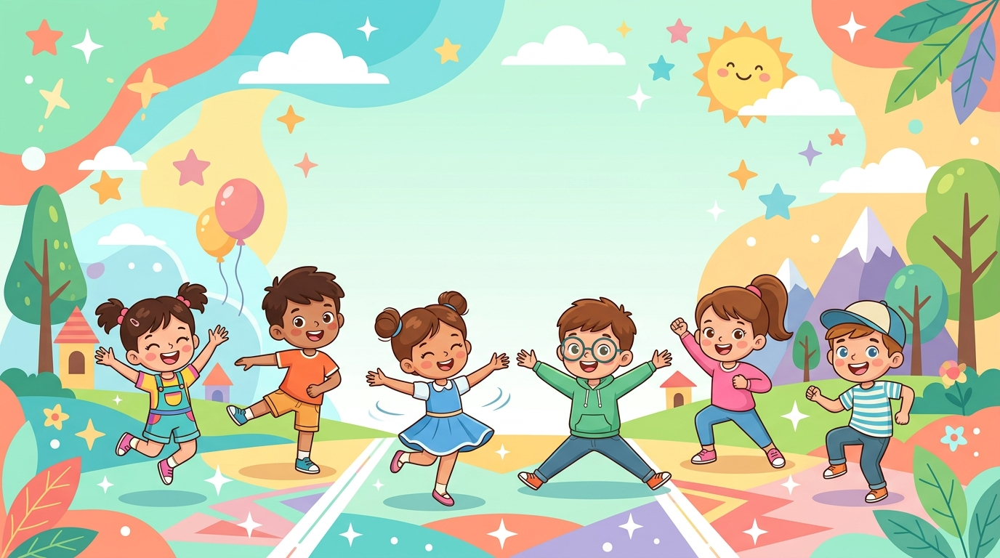
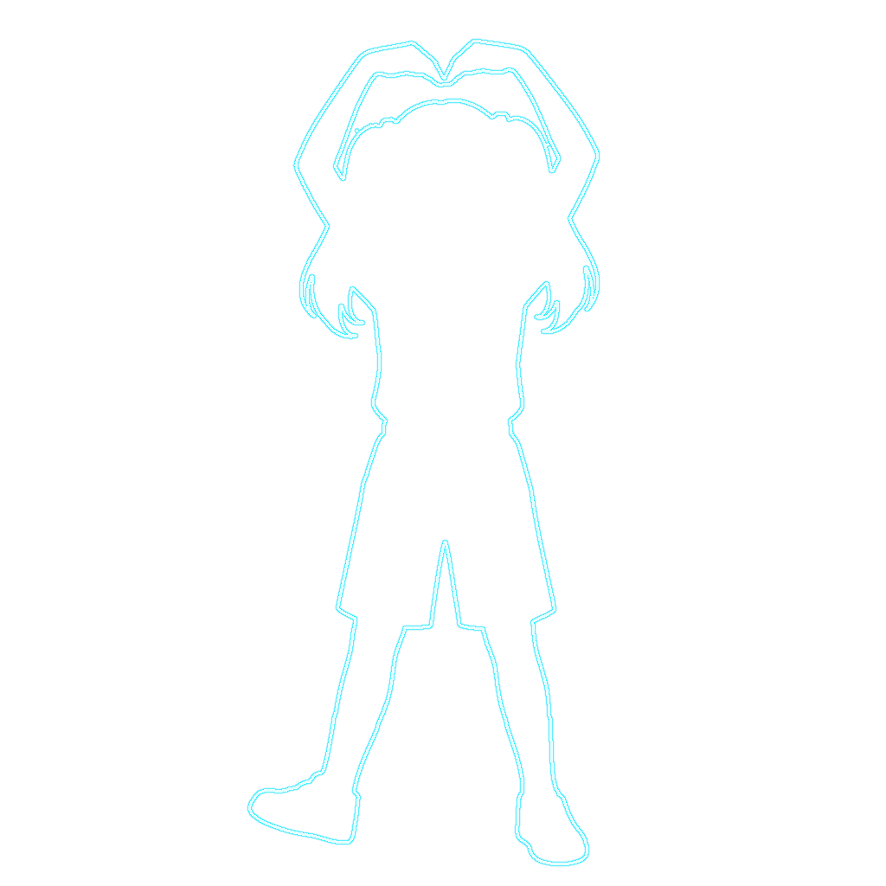

카카오톡 등 앱 내부 브라우저에서는 카메라(웹캠) 및 전체화면 기능이 제한됩니다. 아래 버튼을 눌러 원활한 플레이가 가능한 전용 브라우저로 이동해 주세요!
원활한 게임 진행을 위해기기를 가로 모드로 회전해주세요!

원하는 포즈로 신나게 따라해봐요!

카메라 위에 실루엣을 겹쳐 자세 안내
거울처럼 좌우 반전하여 쉽게 따라하기
수업 상황에 맞게 대기 시간 조절
33개 신체 관절 실시간 추적 & 일치율 분석
아이폰 Safari는 [홈 화면에 추가]를 하시면 상·하단 툴바가 사라져 진짜 앱처럼 전체화면으로 플레이하실 수 있습니다!